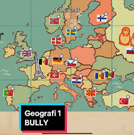
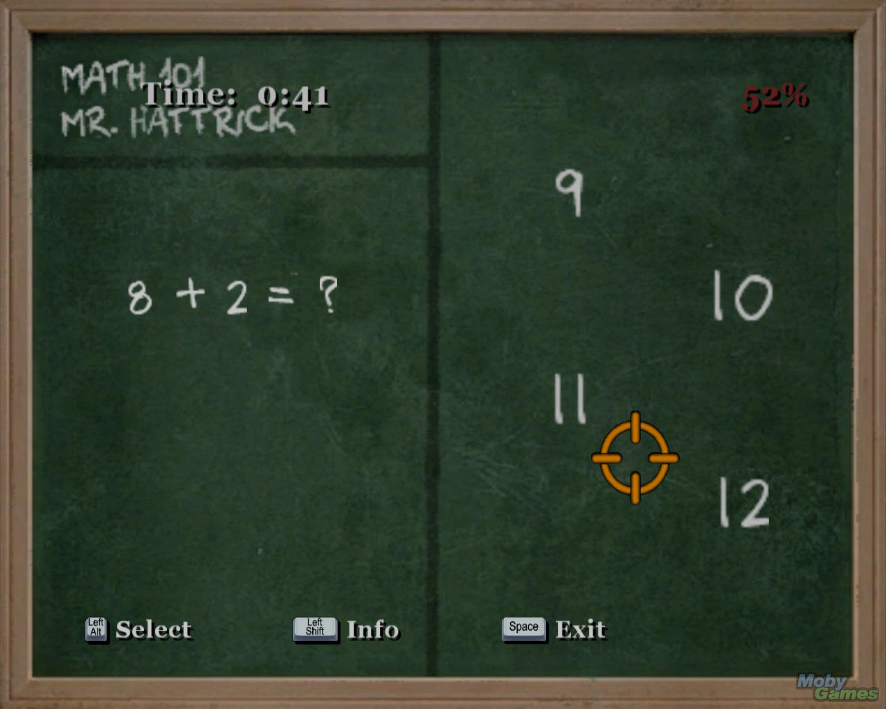
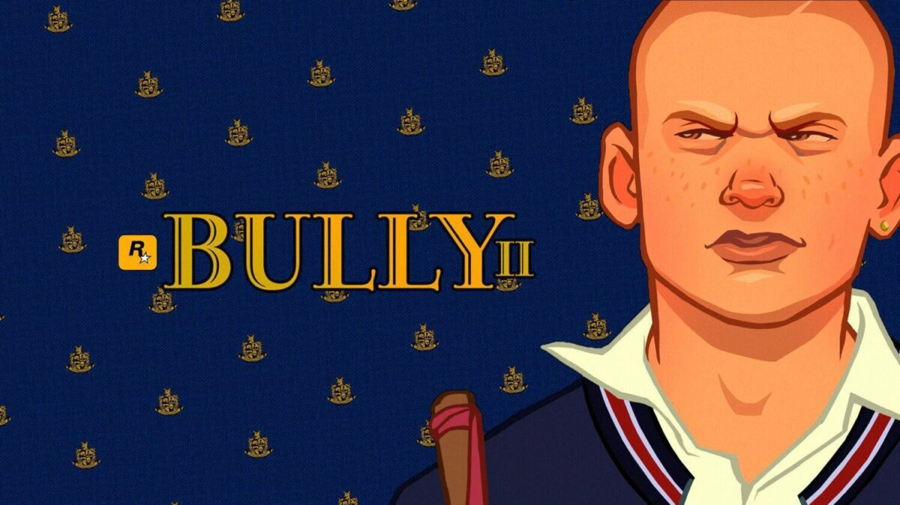

Bully
1. Título diferente em alguns países
Em alguns lugares, o jogo foi lançado com o nome “Canis Canem Edit”, que em latim significa “Cão come cão”. Isso aconteceu porque o nome Bully foi considerado polêmico em alguns países, por parecer que o jogo incentivava o bullying.

2. Criado pela mesma produtora de GTA
As ações do jogador afetam o comportamento dos NPCs e o desenrolar da história. Se você for muito violento ou criminoso, as pessoas te temerão e evitarão. Se for bondoso, ganhará respeito e ajuda de estranhos.

3. O protagonista não é realmente um "bully"
Apesar do nome, Jimmy Hopkins, o personagem principal, na verdade defende os alunos mais fracos e enfrenta valentões, professores corruptos e gangues escolares. A ideia do jogo é mais sobre justiça do que maldade.

4. Existe um modo “aula” com mini games educativos
Durante o jogo, você pode frequentar aulas como Química, Inglês, Arte e Educação Física, com mini games próprios. Se for bem nelas, ganha bônus como mais força ou habilidade para pedir desculpas.

5. Uma sequência foi planejada, mas nunca lançada
A Rockstar chegou a trabalhar em um Bully 2, com roteiros e conceitos prontos. Mas o projeto foi engavetado para priorizar jogos como GTA V e Red Dead Redemption 2. Muitos fãs ainda esperam a continuação.
